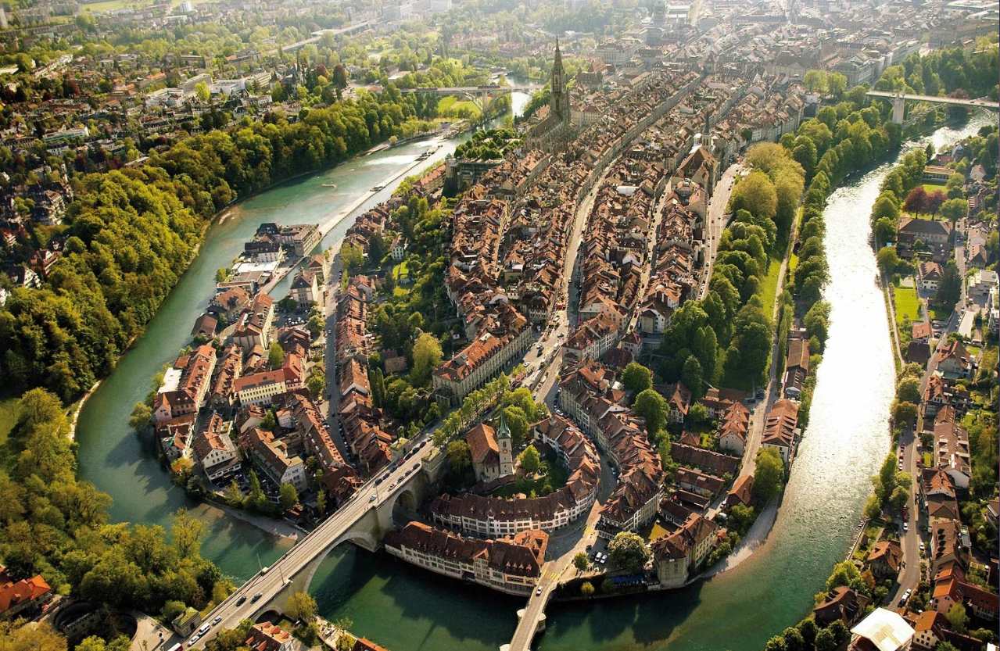
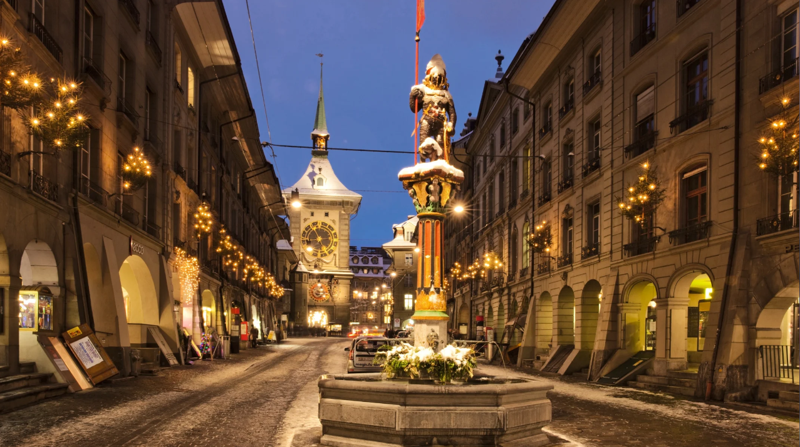
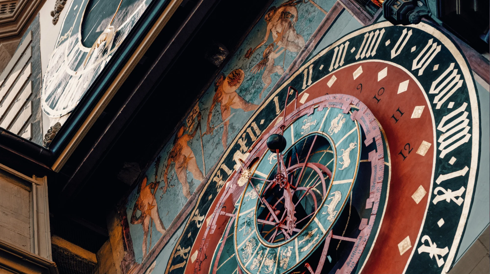
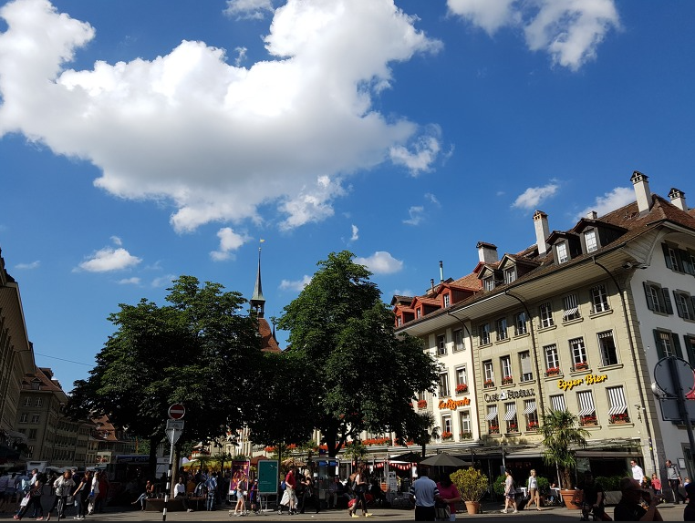
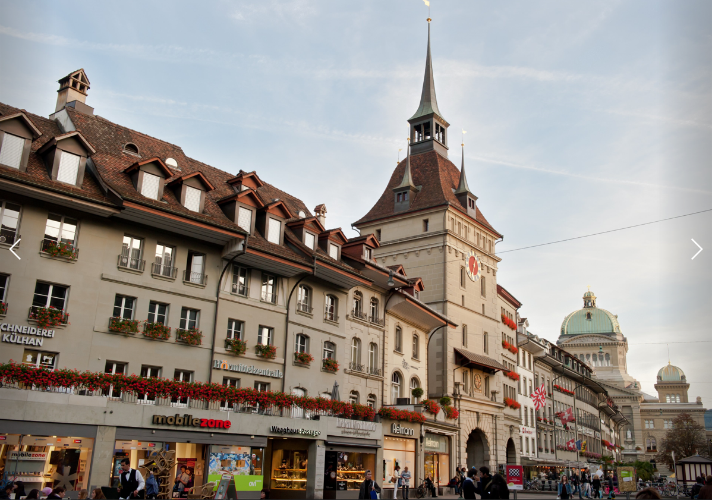
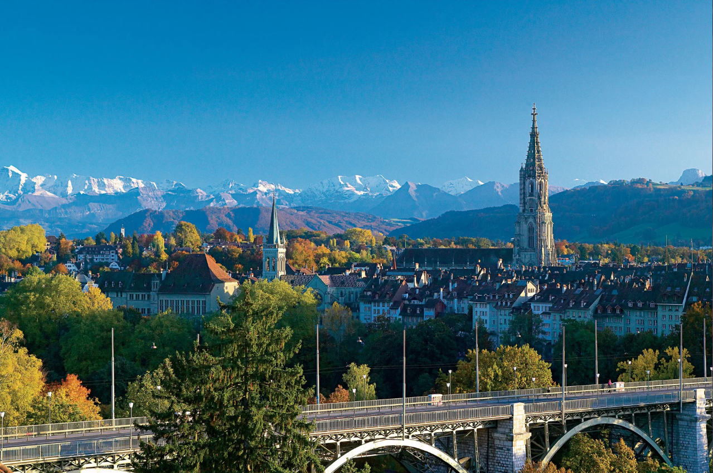
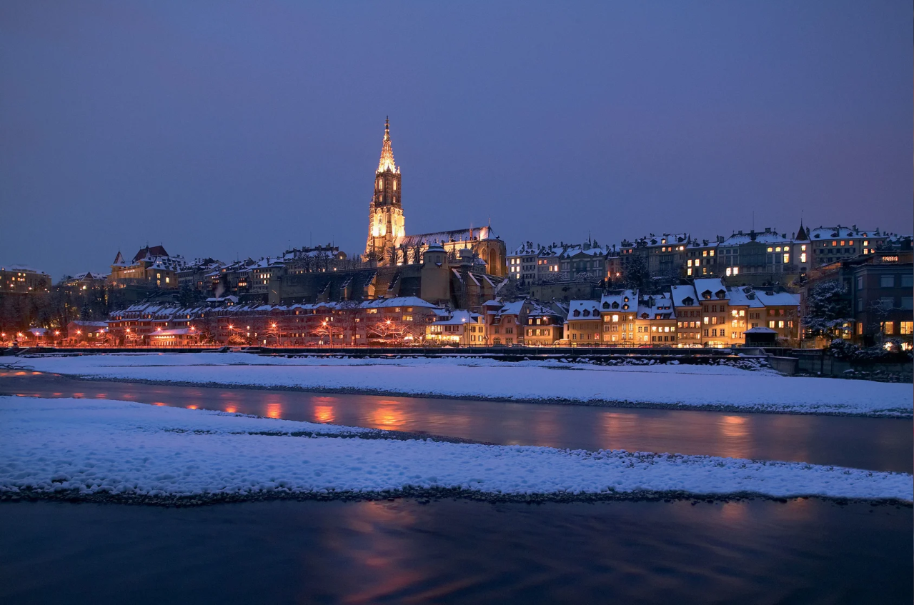

< 베른 구시가지 >

1191년에 건립된 베른은 6km에 이르는 석회암 건물들과 중세시대의 아케이드, 다채로운 형상을 한 르네상스 양식의 분수,
그리고 그림 같은 지붕 꼭대기로 둘러싸인 아름다운 성당이 있다.
베른의 구시가지의 거의 대부분이 유네스코 세계 문화 유산에 등록되어 있다고 한다.
베른 구시가지에서 다양한 종류의 분수를 찾아다니는 재미도 있다.
< 시계탑 - Zytglogge >


13세기 탑이자 베른 최초의 성곽 유적이다.
시계탑의 종은 600년이 넘도록 매 시각을 성실하게 알려주고 있다고 한다.
시계탑의 나선형 계단을 오르면 전망대가 나오는데, 베른 구시가지와 알프스의 풍경을 볼 수 있다.
< 베렌광장 - Bärenplatz & 감옥탑 - Käfigturm >


마르크트 거리가 끝나는 곳에 베렌광장이 있다.
아침과 오전에는 시장들이 서고, 오후에는 레스토랑과 카페들로 채워져 붐비는 거리이다.
광장 한쪽에는 베른의 두 번째 서쪽 관문인 감옥탑 건물이 있다.
1256년에서 1344년에 건설되어서 1641년부터 1897년까지 감옥으로서의 기능을 유지했다. 시계는 1691년에 설치되었다고 한다.
< 대성당 - Bern Münster >


스위스에서 가장 인상적인 후기 고딕 양식의 성당이다.
구시가지의 지붕들 위로 보이는 베른 대성당은 스위스의 종교 건축물 중 가장 큰 건물이다.
눈에 띄는 특징을 지닌 중앙 정문에는 최후의 심판이 묘사되어 있으며 이는 개혁파의 성상파괴 운동으로부터 사라지지 않고 겨우 남아있는 이미지이다.
1421년에 건설을 시작하여 1596년에 성당 부분이 지어졌고, 1893년에 첨탑만이 완성되었다.
첨탑은 높이 100m로 스위스에서 가장 높은 탑이며 나선계단을 통해 올라갈 수 있다.